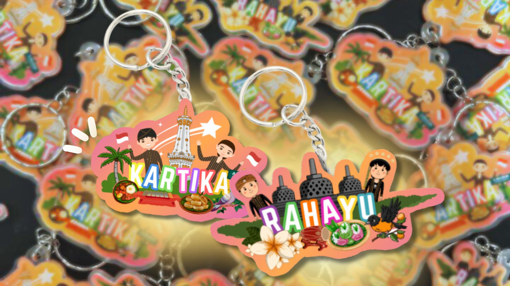
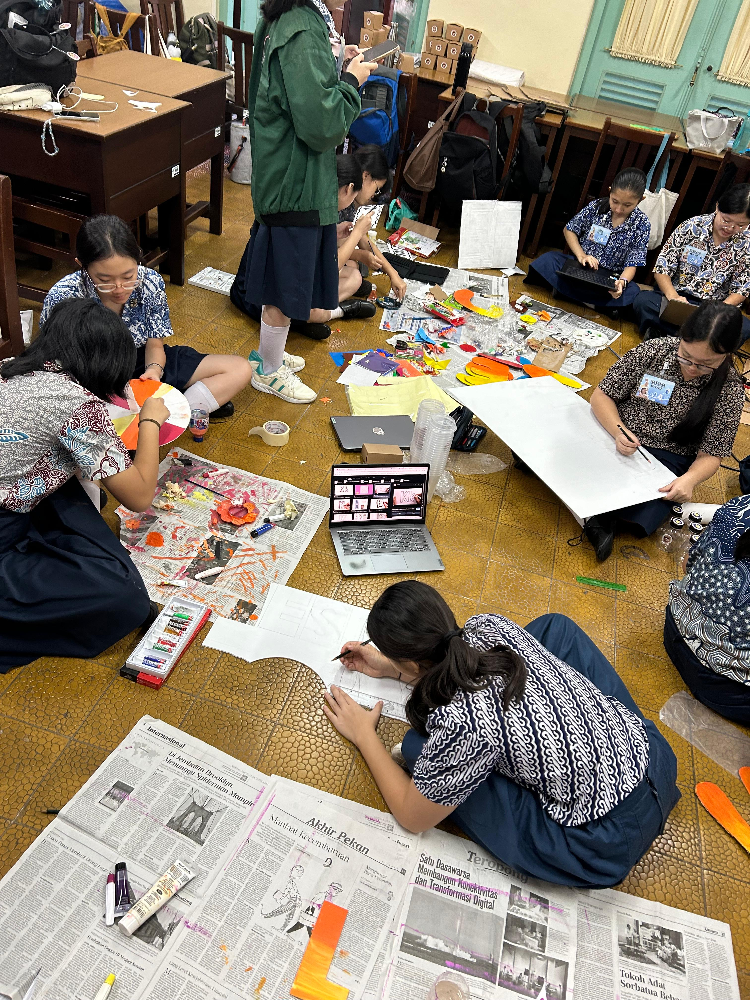
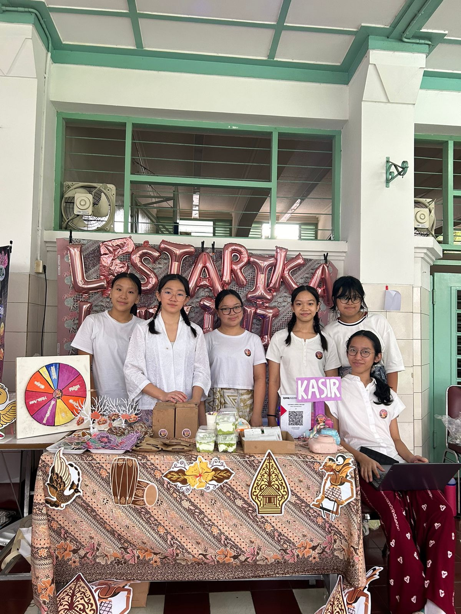
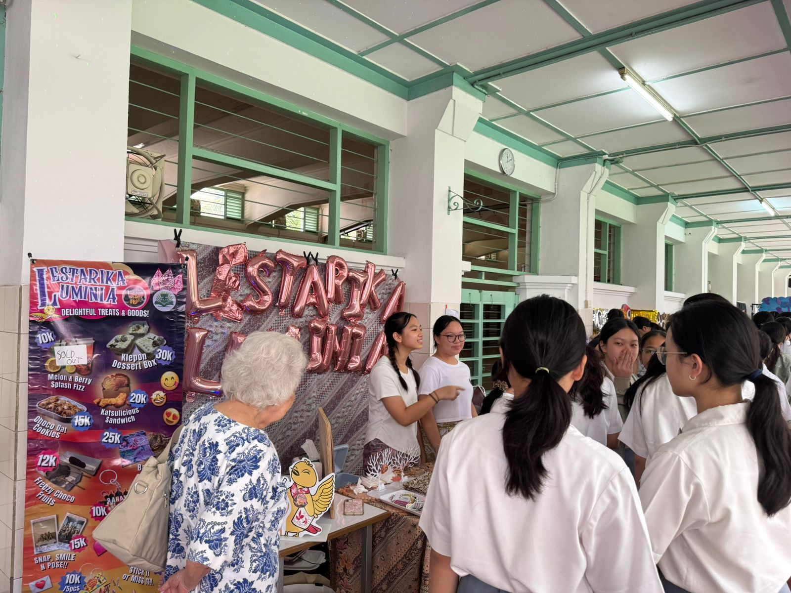
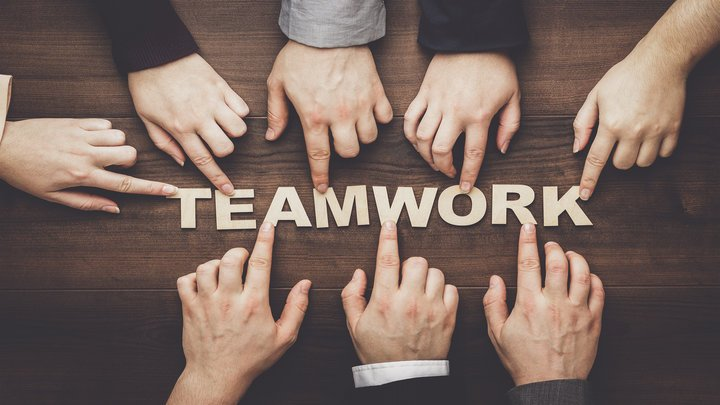

Bazar Integrated Learning adalah penilaian yang mencakup semua mata pelajaran dari awal proses
perencanaan, pelaksanaan dan terakhir pembuatan website untuk mengambil nilai. Perencanaan bazar ini
dimulai semejak kami duduk di bangku kelas 9, menunjukkan bahwa kesuksesan acara ini bukanlah hasil
instan, melainkan buah dari kerja keras dan dedikasi panjang. Kami memulainya dengan proyek kecil dari
berbagai mata pelajaran seperti PPKn, Kesenian, Matematika, IPA, Penjas, dan Bahasa Indonesia.
Sebagai bagian dari persiapan, kami membuat produk-produk yang akan dijual, seperti keychain kartika
dan rahayu yang diberi nama “Java Keychains”. Kami memilih membuat keychains karena tidak hanya
memiliki nilai seni dan budaya yang tinggi, namun juga dapat menjadi sebuah barang untuk
mengingatkan kembali teman-teman lain untuk selalu cinta dan bangga akan tanah air Indonesia. Proses
pembuatan keychain ini tidak hanya mencerminkan kreativitas dan melatih keterampilan praktis kami
tetapi juga memperkuat rasa kebersamaan dalam tim.
Proses pembuatan seluruh produk dilakukan dengan penuh semangat dan kolaborasi. Setiap anggota
kelompok memiliki perannya masing-masing, dari mempersiapkan bahan, hingga proses pembuatan dan
menyelesaikan produk akhir. Kami juga memastikan bahwa setiap tahap produksi mencerminkan
nilai-nilai tenggang rasa dan toleransi, terutama dalam menghargai setiap ide dan masukan dari
anggota tim.

Seringkali kami mengadakan pertemuan pada sore hari di mana semua orang dapat bergabung untuk membahas
perencanaan dan pembagian tugas melalui Google Meet. Selain itu, kami juga sering berkumpul di rumah
Bella dan rumah Nia untuk berdiskusi lebih lanjut, mulai dari mendesain logo, mencoba berbagai resep,
hingga memotret produk makanan dan perencanaan booth bazar. Setiap pertemuan selalu penuh dengan
kebersamaan dan keceriaan. Di tengah kesibukan mempersiapkan bazar, kami tetap menikmati momen-momen
kecil bersama tertawa saat percobaan resep tidak sesuai harapan, saling memberi masukan untuk desain,
hingga berbagi camilan di sela-sela sesi foto produk.
Persiapan
Persiapan telah kami mulai sejak sebelum liburan Natal dan Tahun Baru, tepatnya pada tanggal 12 Desember
2024. Pada tahap ini, kami bersama-sama memulai proses kreatif dengan membuat frame photobooth, dekorasi
booth, serta memproduksi berbagai produk yang akan dijual, seperti gantungan kunci Kartika dan Rahayu,
dan melengkapi kebutuhan lainnya dengan membeli barang-barang tambahan untuk bazar. Tahap persiapan ini
bukan hanya sekadar mengumpulkan barang atau menghias booth, tetapi juga melibatkan perencanaan yang
matang dan pembagian tugas yang jelas di antara anggota kelompok.

Persiapan telah kami mulai sejak sebelum liburan Natal dan Tahun Baru, tepatnya pada tanggal 12
Desember
2024. Pada tahap ini, kami bersama-sama memulai proses kreatif dengan membuat frame photobooth,
dekorasi
booth, serta memproduksi berbagai produk yang akan dijual, seperti gantungan kunci Kartika dan
Rahayu,
dan melengkapi kebutuhan lainnya dengan membeli barang-barang tambahan untuk bazar. Tahap persiapan
ini
bukan hanya sekadar mengumpulkan barang atau menghias booth, tetapi juga melibatkan perencanaan yang
matang dan pembagian tugas yang jelas di antara anggota kelompok.
Proses pembuatan produk dilakukan dengan penuh semangat dan kolaborasi. Setiap anggota kelompok
berperan aktif dalam setiap tahapan mulai dari membeli bahan bahan, memproduksi barang barang,
dekorasi, perencanaan booth. Sementara itu, persiapan dekorasi booth juga tidak kalah seru. Kami
menghias frame photobooth dengan sentuhan kreatif, merancang tata letak booth agar terlihat menarik,
dan memastikan semua elemen dekorasi mencerminkan tema kebudayaan yang diusung. Di sela-sela
persiapan, suasana selalu penuh dengan keceriaan. Meskipun terkadang merasa lelah, kebersamaan dan
semangat untuk memberikan yang terbaik membuat kami terus termotivasi.
Pelaksanaan
Bazar diadakan pada tanggal 14 dan 16 Januari 2025, dengan pembagian jadwal di mana booth kelas 91 dan 92
tampil pada tanggal 14 Januari, sementara kelas 93, 94, dan 95 tampil pada tanggal 16 Januari.
Sejujurnya, kami merasa sangat bersemangat sekaligus gugup menghadapi hari bazar. Malam sebelum bazar,
kami mengadakan rapat daring melalui Google Meet untuk memastikan semua persiapan telah matang. Dalam
rapat tersebut, kami berbincang sebentar untuk menenangkan perasaan tegang, membahas rencana hari H, dan
membagi tanggung jawab secara adil. Setiap anggota kelompok mendapatkan peran sesuai dengan kemampuan
dan minatnya, sehingga setiap orang merasa dilibatkan dan memiliki kontribusi penting dalam acara ini.
Pada hari pelaksanaan, kami memulai pagi lebih awal. Kami memastikan tidak ada bahan atau peralatan
yang tertinggal di rumah dengan membuat checklist barang bawaan, mulai dari bahan makanan, dekorasi
booth, hingga alat transaksi seperti kotak uang dan kalkulator. Kami tiba di sekolah lebih pagi
untuk memulai persiapan dengan lebih tenang dan terorganisir. Setelah bel masuk berbunyi, kami
langsung menuju dapur sekolah pada pukul 7 pagi untuk mulai mempersiapkan produk makanan dan minuman
yang akan dijual. Dalam proses tersebut, setiap anggota kelompok saling membantu, ada yang membuat
minuman Melon and Berry Splash Fizz, ada yang menata bahan-bahan sandwich untuk Katsulicious
Sandwich, dan ada pula yang memanaskan coklat untuk Freezy Choco Fruits.
Selain menyiapkan produk makanan dan minuman, kami juga menghias booth dengan dekorasi yang
telah dipersiapkan sebelumnya. Booth kami dihias dengan batik, standee dan warna-warna cerah,
lengkap dengan frame photobooth yang menarik perhatian pengunjung. Kami menata produk dengan rapi
dan membuat banner untuk memudahkan pengunjung dalam memilih produk. Meskipun awalnya sempat merasa
panik dengan banyaknya persiapan, perlahan kami mulai menemukan ritme kerja yang tepat. Setiap
anggota tim menjalankan tugasnya dengan baik, dan komunikasi di antara kami pun terjalin lancar.


Bazar seharusnya dimulai pada pukul 11 siang, namun bahkan sebelum acara resmi dibuka, bel istirahat
berbunyi dan mendadak booth kami sudah diserbu pembeli. Siswa-siswa lain yang penasaran dengan
produk kami mulai berdatangan, bertanya-tanya, dan membeli produk sebelum kami sempat benar-benar
membuka penjualan. Kami benar-benar terkejut melihat banyaknya siswa yang antusias ingin membeli
produk kami, bahkan sebelum bazar dimulai secara resmi. Suasana booth menjadi sangat ramai, kami
harus bergerak cepat untuk melayani pembeli, mencatat transaksi, dan memastikan stok produk tetap
terjaga.
Produk yang pertama kali habis terjual adalah minuman dan cookies kami. Kami melihat antrian
panjang pembeli yang menunggu giliran untuk mencoba Melon and Berry Splash Fizz, minuman segar
dengan rasa buah yang unik dan menyegarkan. Selain itu, Freezy Choco Fruits kami juga sangat
diminati, terutama di kalangan siswa yang ingin menikmati camilan manis dan dingin di tengah cuaca
yang panas. Tidak ada produk yang tersisa, kecuali beberapa pouch batik yang terkena tumpahan
minuman, membuat kami ragu untuk menjualnya.
Hasil Kegiatan
Dari segi penjualan, kami merasa sangat puas karena hampir semua produk terjual habis. Minuman segar
Melon and Berry Splash Fizz, camilan manis Freezy Choco Fruits, dan Katsulicious Sandwich mendapatkan
respon positif dari pembeli. Produk-produk tersebut bahkan terjual lebih cepat dari yang kami
perkirakan. Namun, ada beberapa pelajaran penting yang kami ambil, terutama mengenai pengelolaan stok.
Pada bazar kali ini, minuman dan kami habis bahkan sebelum bazar benar-benar dimulai, menunjukkan bahwa
kami bisa meningkatkan jumlah produksi agar dapat memenuhi permintaan yang tinggi.
Dari sisi persiapan booth, booth kami terlihat menarik, dan frame photobooth yang kami buat berhasil
menjadi daya tarik tambahan bagi pengunjung. Namun, kami menyadari bahwa penataan ruang masih bisa lebih
dimaksimalkan untuk menciptakan alur pembeli yang lebih teratur, sehingga tidak terjadi penumpukan di
depan booth.

Dari aspek kerjasama tim, kami merasa sangat bangga. Setiap anggota kelompok menjalankan tugasnya
dengan baik, menunjukkan tanggung jawab, dan komunikasi yang efektif. Saling memberi semangat dan
saling mendukung membuat pekerjaan terasa lebih ringan dan menyenangkan. Meskipun di tengah acara
beberapa dari kami sempat merasa kelelahan, berkat semangat gotong-royong, kami berhasil
menyelesaikan semuanya dengan baik.
Namun, kami juga menyadari adanya beberapa tantangan yang perlu menjadi perhatian ke depannya.
Salah satunya adalah manajemen waktu. Dalam proses persiapan makanan, kami merasa masih ada sedikit
keterlambatan, yang mengakibatkan proses pemindahan produk ke booth menjadi tergesa-gesa. Untuk
mengatasi ini di masa depan, kami berencana untuk membuat jadwal yang lebih terperinci, dengan tugas
dan waktu yang jelas bagi setiap anggota kelompok.
Secara keseluruhan, bazar ini menjadi pengalaman berharga yang tidak hanya memberikan kegembiraan,
tetapi juga banyak pelajaran berharga. Melalui evaluasi ini, kami berharap bisa meningkatkan
kualitas proyek-proyek kami selanjutnya dan terus belajar untuk menjadi lebih baik. Pengalaman ini
juga mempererat persahabatan di antara kami dan mengajarkan nilai-nilai kerja keras, tanggung jawab,
dan kebersamaan yang akan selalu kami kenang.